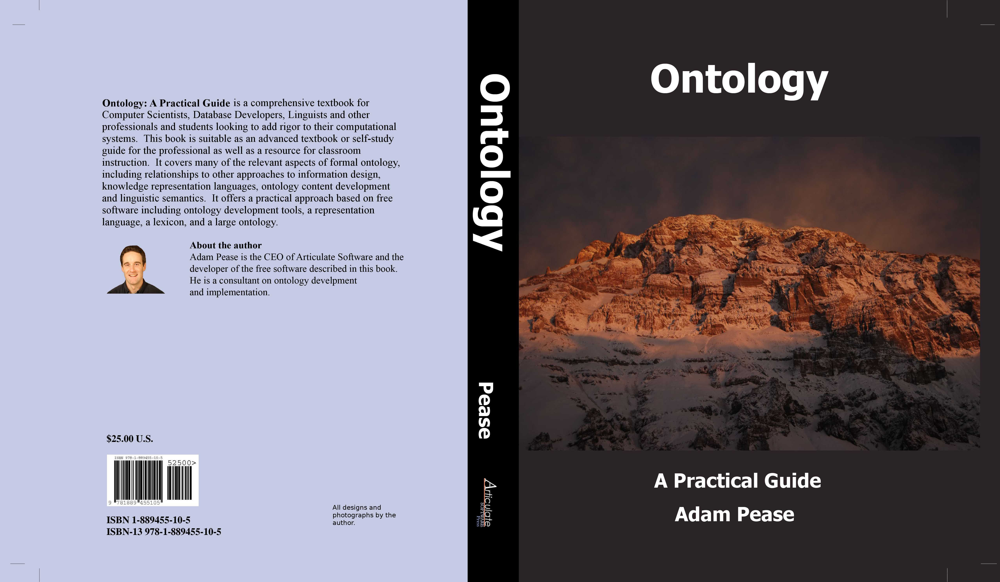

Suggested Upper Merged Ontology (SUMO)
|
The Suggested Upper Merged Ontology (SUMO) and its domain ontologies form
the largest formal public ontology in existence today. They are being used
for research and applications in search, linguistics and reasoning. SUMO is
the only formal ontology that has been mapped to all of the
WordNet lexicon. SUMO is
written in the
SUO-KIF
language. SUMO
is free and owned by the IEEE. The ontologies that extend SUMO are available
under GNU General Public License.
Adam Pease is the
Technical Editor of SUMO.
|
Find an English word and its corresponding formal term in SUMO: | |||
|
  Order a copy of the new book "Ontology: A Practical Guide" for $25+tax/shipping (international customers should email me first to get shipping costs) Using SUMO on a project already? Some 5000 unique domains use the online Sigma browser every month. Please consider making a donation to help us continue providing support and improvements. |
{kind=link}
| Webmaster Last modified: 10/08/2013 01:00:02 Hosted by CIM3.NET |